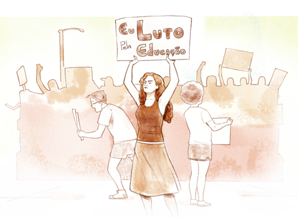
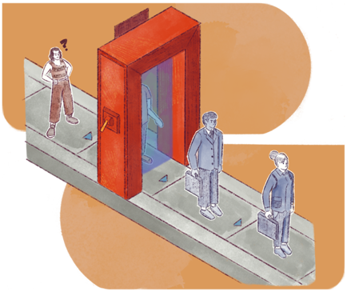

A reforma do Ensino Médio e seu impacto na EPT
As concessões e recuos no plano político e econômico não foram suficientes para superar a crise política. A mudança na correlação de forças que culminou no impeachment da presidenta Dilma Rousseff, eleita em 2016, permitiu uma guinada conservadora que se fez sentir em todos os âmbitos. Deve ser ressaltado, entretanto, que o reposicionamento do polo hegemônico não ocorreu neste momento, os processos já existiam no interior dos espaços públicos, e essa “porta aberta” facilitou a implantação das reformas posteriores.
Como já foi dito, as políticas educacionais refletem as demandas econômicas e sociais, com os setores hegemônicos buscando redefinir o papel da escola para atender seus interesses. O capitalismo, em sua busca incessante por lucro, reduz custos trabalhistas por meio de reformas sucessivas, em detrimento dos direitos dos trabalhadores. A educação é encarada principalmente pelo viés da formação de mão-de-obra e, neste sentido, a escola pública, ao difundir, como dizia o educador, a democracia e a justiça social, torna-se um empecilho ao projeto subalternizante. Essa situação é agravada por propostas que promovem uma visão reducionista da educação e pela influência de um discurso que deslegitima a formação crítica e integral dos estudantes.
.png) Título: Anísio Teixeira Fonte: Arquivo Central da Universidade de Brasília (2017). Elaboração: Prosa (2024t).
Título: Anísio Teixeira Fonte: Arquivo Central da Universidade de Brasília (2017). Elaboração: Prosa (2024t).
A discussão sobre o Ensino Médio e seus problemas de inadequação não era novidade. Desde a reforma anterior, na segunda metade dos anos 1990, a falta de identidade da última etapa da Educação Básica (preparar para o trabalho ou para o prosseguimento dos estudos) era considerada a causa da evasão, do desinteresse da juventude, do baixo rendimento etc. As propostas dos dois polos estavam em debate, sendo a citada Resolução CNE/CEB nº 02/2012 a expressão da posição não hegemônica. Em 2016, o processo de debate é abortado e, de forma açodada, é aprovada uma reforma muito semelhante à proposta defendida pelo polo hegemônico desde o início dos anos 2000. Inicialmente, a proposta foi aprovada por medida provisória e depois transformada na Lei nº 13.415/2017.
A reforma (ou contrarreforma) do Ensino Médio e seus corolários, a Base Nacional Curricular Comum (BNCC) e as Resoluções do CNE (que adequam as diversas normativas infralegais à reforma) têm sido, desde o seu lançamento, amplamente contestadas pela comunidade acadêmica e pela sociedade civil, em particular trabalhadores da educação e estudantes. As manifestações ocuparam as escolas (vide a primavera estudantil em 2016-2017) e levou milhares de docentes, estudantes, pais e mães às ruas.

Título: Primavera estudantil
Fonte: Prosa (2025g).
As pesquisas acadêmicas sobre diversos aspectos da reforma, realizadas em todos os estados brasileiros e no Distrito Federal, já ultrapassaram uma centena e ainda prosseguem, apontando que os problemas do Ensino Médio que, em tese, impulsionaram as mudanças não apenas não foram resolvidos, como se agravaram. Agentes sociais, pesquisadores e mesmo os respondentes das consultas públicas realizadas em 2023 pelo MEC convergem nas seguintes críticas:
- Falta de participação social: ausência deliberada de participação efetiva da comunidade escolar, incluindo professores, alunos, pais, e da sociedade em geral, não refletindo a diversidade de vozes e experiências do sistema educacional brasileiro.
- Subordinação ao mercado: foco exclusivo na preparação e aceitação do trabalho precário e do empreendedorismo, em detrimento da formação integral do indivíduo, enquanto trabalhador e cidadão, em sua diversidade e como sujeito de direitos.
- Privatização da educação: de forma direta (pela gestão privada) ou indireta (por meio de parcerias com instituições privadas e empresas), essa reforma molda a educação a partir das necessidades do mercado, diminuindo drasticamente ou eliminando a autonomia das instituições públicas.
- Flexibilização e fragmentação do currículo: ao introduzir itinerários criando trajetórias diferenciadas, mas fortemente dependentes das condições objetivas de cada rede e unidade escolar, acentua-se a dualidade educacional. Sem as condições adequadas, a possibilidade de “escolha” não acontece, restando aceitar o itinerário possível. Ao mesmo tempo, enfatiza-se habilidades e competências, não considerando a complexidade e diversidade das realidades sociais dos estudantes, professores, unidades escolares e territórios, em detrimento de uma formação mais integrada e crítica.
- Desvalorização das Ciências Humanas e desvinculação das Ciências Exatas e Naturais das questões tecnológicas e sociais: a redução da carga horária e a marginalização das disciplinas de Ciências Humanas limita o desenvolvimento do pensamento crítico e a capacidade dos alunos de compreender questões sociais relevantes, como desigualdade, gênero, diversidade e inclusão. Por outro lado, as demais disciplinas são esvaziadas de seu conteúdo social, perdendo parte significativa de seu valor na formação.
- Ambiguidade e inconsistência: no âmbito curricular, há ambiguidade nas formulações, em particular na BNCC, misturando objetivos educacionais e diretrizes curriculares, com impactos negativos na formação docente e na aplicação efetiva do currículo.
- Precarização e desvalorização docente: a fragmentação curricular leva à intensificação do trabalho docente (mais turmas) e ao desvio da formação (assumir disciplinas para completar a carga horária). Soma-se a isso a imposição de currículos prontos ofertados pelas Big Techs e a introdução do “notório saber” (admissão de docentes sem formação pedagógica), resultando na perda autonomia, na desvalorização e na precarização dos professores.
Os impactos na EPT são muito significativos, na medida em que a maior oferta de EPT está diretamente vinculada ao Ensino Médio (nas formas integrada e concomitante). Mesmo a forma subsequente é afetada, por conta do déficit de conhecimentos e dos processos de verticalização de técnico para tecnólogo. Essa reforma também contribui para a banalização da Educação Profissional, aumentando a oferta de cursos de curta duração (o chamado 5º itinerário, EP concomitante à qualificação profissional de curta duração), descontextualizados e sem a devida correlação com os fundamentos científico e tecnológico. O foco exclusivo no “saber fazer” resulta em uma formação técnica superficial, o que implica em uma força de trabalho menos qualificada e mais vulnerável às pressões do mercado de trabalho. Além de criar um imenso exército de reservas, barateando o custo da mão de obra, a ausência de formação crítica leva à apatia e ao fortalecimento da subalternidade.
A reforma atinge em cheio a perspectiva emancipatória e impossibilita a formação integral. A vinculação à Educação Básica e Profissional não é uma questão de escolha ou de simpatia; antes, é uma imposição do mundo do trabalho, nas suas complexidades e contradições, que afeta o acesso a um direito social. Afinal, o conhecimento acumulado pela humanidade, expresso nas diversas disciplinas e na sua articulação, não pode ser privilégio de poucos. Como formar, por exemplo, técnicos em turismo sem a devida base histórica e geográfica, de linguagem e de biologia, ecologia e meio ambiente? A presença de todos os itinerários formativos é imperativa para uma boa formação técnica. A observação atenta do CNCT, para além de um viés tecnicista, localizará, em todos os cursos, demandas análogas.
Se a reforma em si já levanta as questões elencadas anteriormente, em 2019 o governo ultraliberal lançou, via Portaria nº 1.720 do MEC, o Programa "Novos Caminhos", que visava reestruturar a EPT no Brasil, na tentativa de subordiná-la efetivamente à rede federal e não apenas às exigências imediatas das demandas do mercado de trabalho, mas também às entidades privadas executoras de Educação Profissional, ao tempo que ignorava completamente as redes estaduais.
O programa era dividido em três eixos de atuação: “Gestão e Resultados”, “Articulação e Fortalecimento”, “Inovação e Empreendedorismo” e tentou estabelecer novas regras de execução da oferta, alinhadas estrito às demandas do setor produtivo. Apesar do uso de restrições orçamentárias como instrumento de coerção e outras pressões de cunho político, o Programa Novos Caminhos não se efetivou, demonstrando que a resistência contínua da comunidade escolar é fundamental para garantir que a EPT permaneça um espaço de formação crítica e emancipatória.
Entretanto, a desconstrução da EPT emancipatória tinha continuidade, a exemplo do disposto na Resolução CNE/CP nº 1, de 5 de janeiro de 2021, que define as Diretrizes Curriculares Nacionais Gerais para a Educação Profissional e Tecnológica, e a Resolução CNE/CP nº 1, de 6 de maio de 2022, que institui as Diretrizes Curriculares Nacionais para a Formação de Professores da Educação Profissional Técnica de Nível Médio (EPTNM-Formação).
Com o novo governo, a partir de 2023, abriu-se espaço para o debate, mas o polo hegemônico havia crescido em capital e, com isso, fez valer seu peso na mídia e no Congresso Nacional. Assim, apesar das evidências das pesquisas científicas e a recusa da sociedade civil, a reforma foi ratificada, em sua essência, com a Lei nº 14.945/2024, em que pese alguns avanços como a ampliação da carga horária e a manutenção das disciplinas. Antes disso, havia sido promulgada a Lei nº 14.645/2023, que adequa formalmente a EPT a essas reformas. Desta última lei, decorre o Decreto nº 11.985/2024, que institui o Grupo de Trabalho Interinstitucional, composto em sua maioria pelo polo hegemônico, com “a finalidade de produzir subsídios para a Política Nacional de Educação Profissional e Tecnológica” (Brasil, 2024).
Essas normativas finalizaram formalmente a longa reforma da EPT no Brasil, começada em 2016. As táticas do polo hegemônico se diversificaram: não apenas a privatização direta, total ou parcial e o acesso aos fundos públicos, mas a sutil privatização da ação do Estado, ou seja, o processo de colocar as redes públicas a seu serviço, sob sua ideologia, formando pessoas na sua concepção e silenciando os agentes críticos.

Título: Formação acrítica
Fonte: Prosa (2025h).
Entretanto, a história não termina aqui e a luta mais geral continua em torno da elaboração da Política Nacional de EPT e, sobretudo, em cada unidade escolar pública, onde a educação efetivamente acontece e os processos emancipatórios surpreendentemente se multiplicam.
Como exercício para o seu Memorial, analise os objetivos do Plano de Ação, dispostos no Decreto nº 11.985/2024. Discuta os interesses e concepções inerentes a cada alínea:
[...]
I - o fomento à expansão da oferta de cursos de Educação Profissional e Tecnológica em instituições públicas e privadas, observadas as necessidades regionais;
II - o estímulo à realização contínua de estudos e projetos inovadores que visem à articulação da oferta de cursos de Educação Profissional e Tecnológica às necessidades do mundo do trabalho;
III - a participação ativa do setor produtivo na formação e na empregabilidade dos egressos da Educação Profissional e Tecnológica;
IV - a articulação entre as instituições formadoras, o setor produtivo e os órgãos públicos responsáveis pela Política Nacional de Educação Profissional e Tecnológica;
V - a integração curricular entre cursos e programas como forma de viabilizar itinerários formativos e trajetórias progressivas de formação profissional e tecnológica;
VI - o fomento à capacitação digital, no âmbito da Educação Profissional e Tecnológica, de forma a promover a especialização em tecnologias e aplicações digitais;
VII - a atuação conjunta entre a Rede Federal de Educação Profissional, Científica e Tecnológica e as Secretarias de Educação estaduais e distrital ou os órgãos equivalentes responsáveis pela formação profissional e tecnológica; e
VIII - a instituição de instância tripartite de governança da Política Nacional de Educação Profissional e Tecnológica e de suas ações, com representação paritária dos gestores da educação, das instituições formadoras e do setor produtivo.
[...].